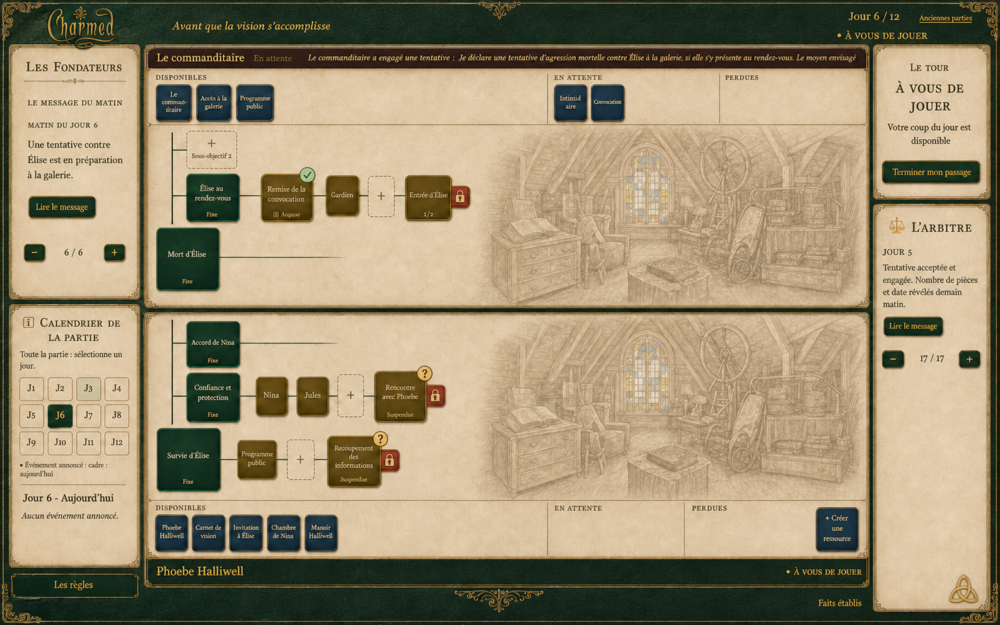
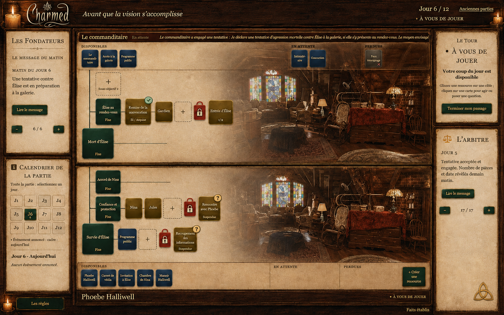
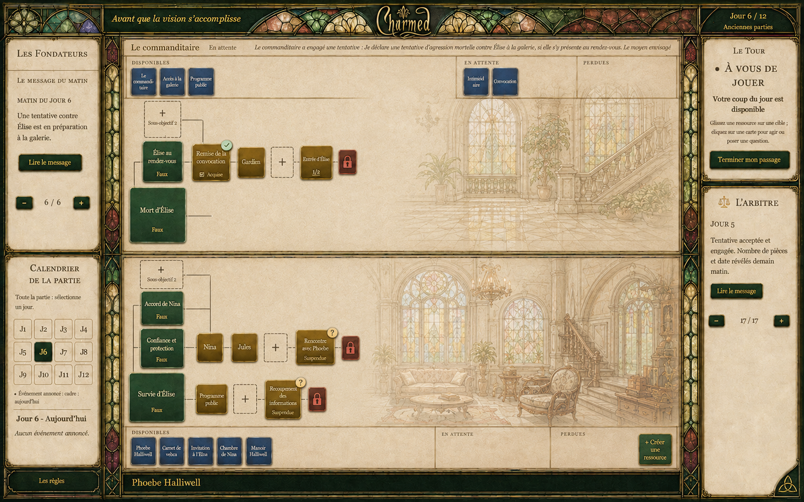
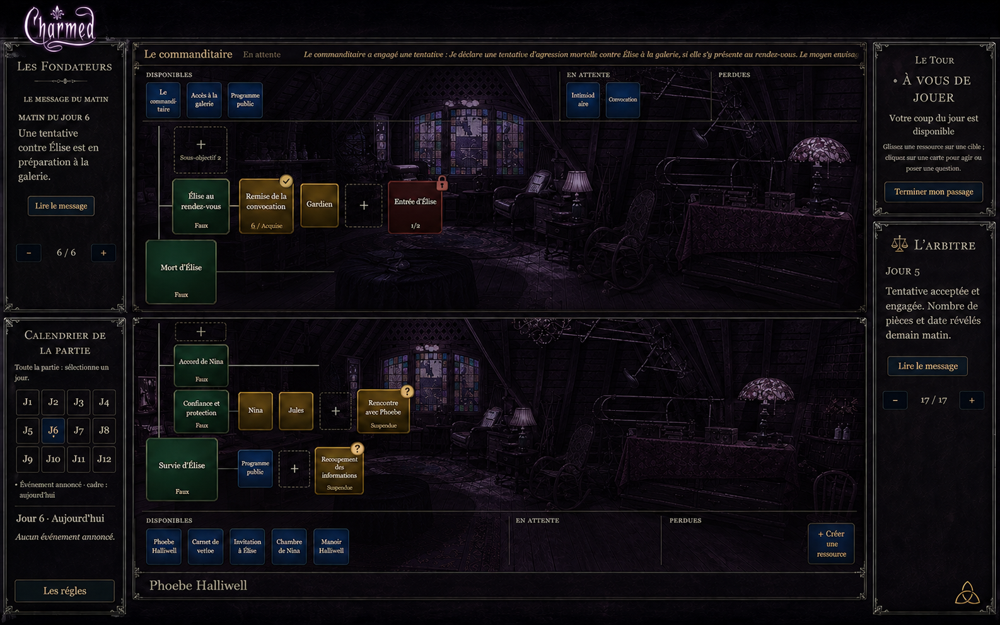
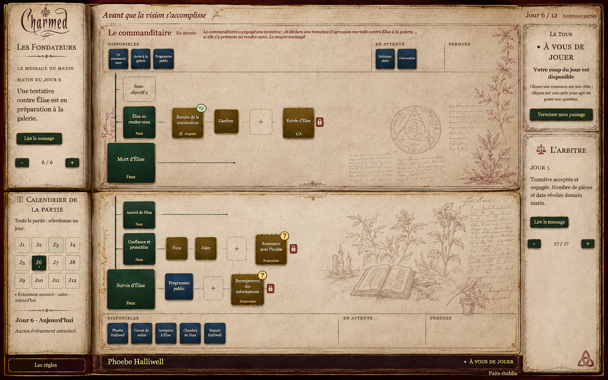
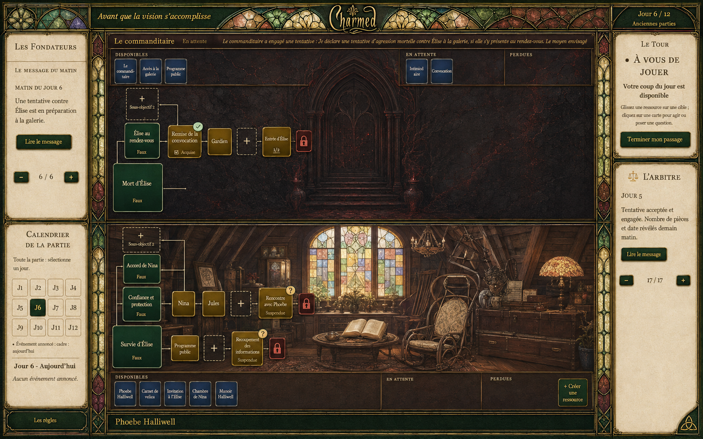

1. Livre des Ombres
Cuir vert, parchemin et dessin du grenier.

Ouvrir en grand ↗
2. Grenier à la bougie
Bois sombre, photographie du grenier et lumière chaude.

Ouvrir en grand ↗
3. Vitraux du manoir
Bordures de vitraux, lumière claire et gravures du manoir.

Ouvrir en grand ↗
4. Charmed de nuit
Grenier nocturne, prune sombre et texte ivoire.

Ouvrir en grand ↗
5. Pages de sorcellerie
Pages anciennes, dessins botaniques et encre sépia.

Ouvrir en grand ↗
6. Mal / Halliwell — proposition supplémentaire
En haut, un décor sombre évoquant le Mal ; en bas, le grenier des sœurs.

Ouvrir en grand ↗